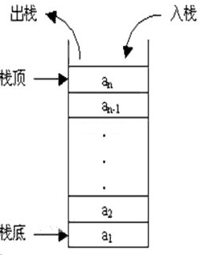
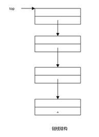
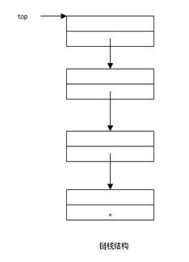

04栈
4.1栈的定义：后进先出
栈是允许在同一端进行插入和删除操作的数据结构。被允许进行插入和删除操作的一端称为栈顶(top)，另一端为栈底(bottom)；栈底固定，而栈顶浮动；栈中元素个数为零时称为空栈。插入一般称为进栈（PUSH），删除则称为出栈（POP）。
由于栈规定只能在同一端进行插入和删除，因此栈的一个典型特点就是后进先出。
为了理解栈的后进先出特性，下面来看一道BAT的笔试题：
一个栈的入栈序列为ABCDE，则不可能的出栈序列为？
A. ECDBA B. DCEAB C. DECBA D. ABCDE E. EDCBA
答案：A,B
分析：
A：E最先出栈，所以ABCD已经先后入栈，所以，根据后进先出，C不可能比D先出栈
B：D出，C出，E入E出，AB已经先后入栈，所以，A不可能比B先出
C：D出E入E出C出B出A出
D：A入A出B入B出C入C出D入D出E入E出
E：E出D出C出B出A出
4.2 栈的结构
栈的底层数据结构包含链表与数组。可以通过链表或者数组来构造栈，如下图所示：上边是基于链表的栈，下边是基于数组的栈。

4.3 栈的基本操作
1栈的创建
int CreateStack();
负责初始化栈的基本结构，比如栈顶指针的初始化。
2入栈
int Push(int data);
将数据从栈顶插入
3出栈
int Pop(int *data);
获取栈顶数据，并将数据从栈顶删除
4栈空判断
int IsStackEmpty();
判断栈是否为空，栈为空，就不能再pop了。
5栈满
int IsStackFull();
判断栈是否为满，栈满就不能再插入数据了。只有基于数组的栈，才需要判断栈是否已满。
4.4 基于链表的栈
现在来实现基于链表的栈的常规操作。（注意，在多线程环境下，下面的代码没有提供加锁机制，需要另外处理）。
先定义栈的结点结构：
typedef struct _node
{
int value;
struct _node *next;
}node,*pnode;
栈顶指针初始化：
node *top = NULL;
创建栈：
int CreateStack()
{
top = NULL;
return 1;
}
判断栈是否为空：
int IsStackEmpty()
{
return top==NULL?1:0;//top为NULL的时候，栈为空
}
入栈：
int Push(int value)
{
node *p = (node *)malloc(sizeof(node));
if(p==NULL)
{
return -1;
}
memset(p,0,sizeof(node));
p->value=value;
p->next=NULL;
//栈为空的时候，插入的是第一个结点
if(IsStackEmpty())
{
top=p;
return 1;
}
//栈非空的时候，插入一个结点
p->next = top;
top=p;
return 1;
}
出栈
int Pop(int *e)
{
if(IsStackEmpty())
{
return -1;
}
if(e==NULL)
{
return -1;
}
//当栈只有一个结点的时候：
if(top->next==NULL)
{
*e = top->value;
free(top);
top=NULL;
return 1;
}
//当栈中存放不止一个元素的时候
*e = top->value;
node *p=top;
top=top->next;
free(p);
return 1;
}
栈的遍历：
void TraverseStack()
{
while(!IsStackEmpty())
{
int val;
Pop(&val);
printf("%d ", val);
}
printf("\n");
}
接口测试：
int _tmain(int argc, _TCHAR* argv[])
{
CreateStack();
for(int i=0;i<100;i++)
{
Push(i+1);
}
int val;
Pop(&val);
printf("val:%d\n", val);
TraverseStack();
return 0;
}
4.5 基于数组的栈
下面来实现基于数组的栈的常规操作。（注意，在多线程环境下，下面的代码没有提供加锁机制，需要另外处理）。如下图所示，栈顶top指向数组中下一个空位：

#define MAXSIZE 1000//栈中数组容纳的元素个数
int Stack[MAXSIZE]={0};//栈的底层数据结构：数组stack
int top=0;//栈顶
创建栈
int CreateStack()
{
top=0;//将top置零
return 1;
}
判断栈是否满
int IsStackFull()
{
return top==MAXSIZE?1:0;
}
判断栈是否空
int IsStackEmpty()
{
return top==0?1:0;
}
入栈：
int push(int val)
{
if(IsStackFull())
{
return -1;
}
Stack[top]=val;
top++;
return 1;
}
出栈：
int pop(int *e)
{
if(IsStackEmpty())
{
return -1;
}
if(e==NULL)
{
return -1;
}
top--;
*e = Stack[top];
return 1;
}
栈的遍历：
void TraverseStack()
{
while(!IsStackEmpty())
{
int val;
pop(&val);
printf("%d ",val);
}
printf("\n");
}
接口测试：
int _tmain(int argc, _TCHAR* argv[])
{
CreateStack();
for(int i=0;i<500;i++)
{
push(i+1);
}
int val;
pop(&val);
printf("val:%d\n", val);
TraverseStack();
return 0;
}
本页共215段，3582个字符，5313 Byte(字节)